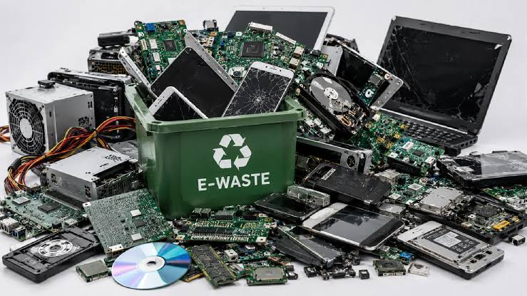
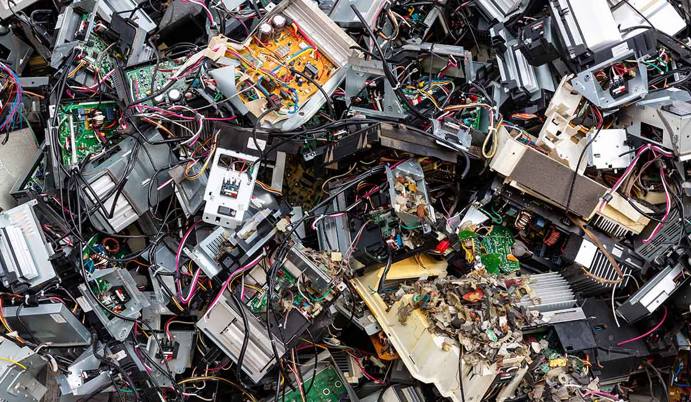
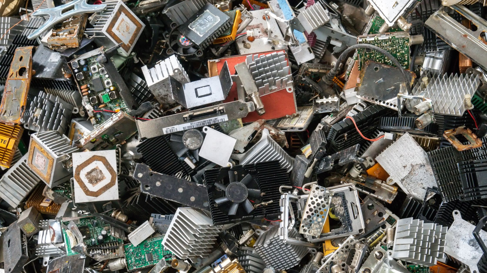
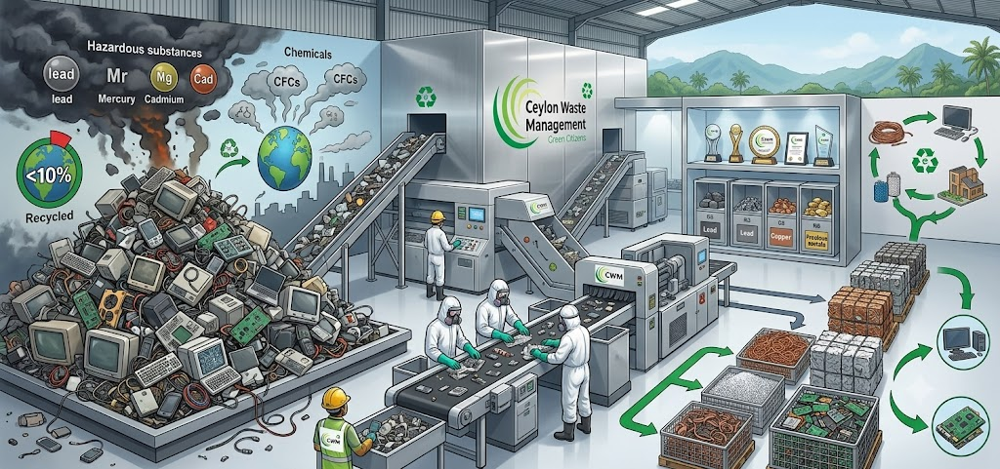

Recycling e-waste is a comprehensive procedure that requires attention-to-detail. Several factors including, environment impact, health & safety factors, and industrial know-hows are all combined to form a complete e-waste recycling program.



Ceylon Waste Management (Pvt.) Ltd (CWM) started out its venture in e-waste recycling and has now expanded with a capacity to recycle 25 million kilograms of Waste Electrical, Electronic Equipment (WEEE), annually. At present, the company is renowned as the largest e-waste recycler in Sri Lanka.

CWM is committed towards complete management of e-waste materials from a local perspective. Recycling of e-waste has become a key factor of circular economy. With 56.3 million tons of e-waste volume forecasted globally as at 2020, only a mere 17.4% are assumed to be properly collected and recycled. In Sri Lanka alone, 130,000 million tons of e-waste was forecasted to be generated, with only less than 10% being properly collected and recycled.
E-waste recycling follows an exhaustive procedure which makes it substantial in terms of the local and global economies. E-waste materials consist of hazardous substances that need to be follow proper methods for recycling. These substances include heavy metals such as lead, mercury, or cadmium and various chemicals such as chlorofluorocarbons (CFCs), hydro chlorofluorocarbons (HCFCs), and brominated flame retardants (BFR).
CWM takes pride in achieving global awards for being recognized as a leading e-waste recycling organization with a complete in-house e-waste recycling facility to ensure high quality and standards along with safety measures, are followed.